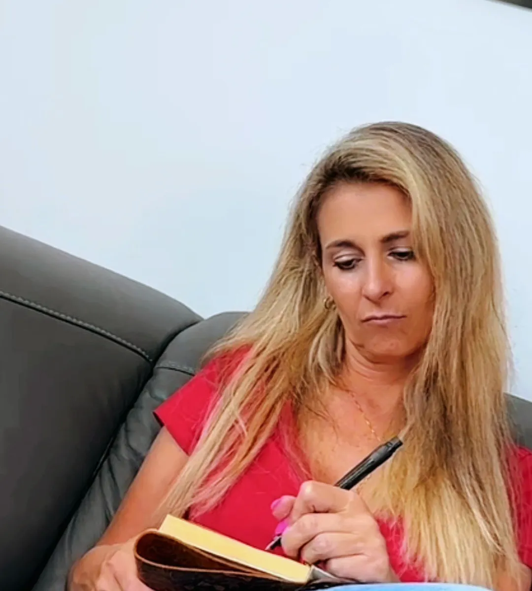

Du hast die Nachricht schon dreimal geschrieben. Einmal lang, einmal kurz, einmal nur ein „Hey, wie geht es dir?". Jedes Mal hast du sie wieder gelöscht. Und jedes Mal ist der Daumen ein bisschen näher am Senden.
Du weißt, was passiert, wenn du sie abschickst. Du kennst das Warten danach. Du kennst die Antwort, die nicht kommt, oder die, die kommt und nichts sagt. Und trotzdem willst du es.
Heute geht es nicht darum, ob du schreiben darfst. Es geht darum, was dieser Impuls wirklich von dir will.
Was will der Impuls eigentlich?
Selten ihn.
Wenn du genau hinschaust, kommt der Wunsch zu schreiben fast nie aus Ruhe. Er kommt aus Spannung: ein leerer Abend, ein Lied, ein Streit mit jemand anderem, ein Tag, an dem du dich unsichtbar gefühlt hast. Dein System sucht Entlastung. Und die schnellste Entlastung, die es kennt, ist Kontakt zu ihm.
Die Nachricht ist also ein Ventil. Sie soll die Spannung abbauen, die Frage schließen, das Gefühl beenden, dass etwas offen ist. Für einen Moment klappt das sogar: Gesendet, erleichtert.
Dann beginnt der eigentliche Preis. Du wartest. Du liest deine Nachricht fünfmal. Du prüfst, ob er online war. Die Spannung, die du loswerden wolltest, ist jetzt doppelt so groß, und sie hängt wieder an ihm.
Erklären heißt nicht entschuldigen. Dein Impuls hat Gründe. Und du darfst trotzdem entscheiden, dass du die Entlastung nicht mehr bei dem Menschen suchst, der sie dir nicht geben kann.
Warum „einfach nicht schreiben" nicht reicht
Weil ein Verbot die Spannung nicht löst. Es hält nur den Daumen fest. Die Spannung bleibt, sie wächst, und beim nächsten schwachen Abend ist das Verbot weg.
Was wirklich hilft, ist nicht das Verhindern der Nachricht, sondern das Umlenken dessen, was sie erledigen soll. Wenn du der Spannung einen anderen Ausgang gibst, braucht sie ihn nicht mehr.

Wie gehe ich mit dem Impuls um?
Ich nenne es den Brief, der bleibt:
Der Brief, der bleibt — immer, wenn der Impuls kommt
Schreib die Nachricht. Vollständig. Nicht ins Handy, sondern in ein Notizbuch oder in eine Notiz-App ohne Senden-Knopf. Alles, was raus will, ungefiltert. Die Spannung bekommt ihren Ausgang, nur nicht in seine Richtung.
Dann die eine Frage darunter: Was hätte ich gern, dass er antwortet? Schreib die Antwort auf, die du dir wünschst. Meist steht dort: dass er dich vermisst, dass er es bereut, dass du ihm etwas bedeutet hast. Das ist es, was du wirklich suchst. Nicht das Gespräch, sondern den Beweis.
Gib dir den Beweis selbst. Ein Satz darunter: Was habe ich in dieser Verbindung gegeben? Was war echt an mir? Lies ihn laut.
24 Stunden. Wenn du nach einem Tag immer noch schreiben willst, und zwar aus Ruhe, nicht aus Spannung, dann ist es deine freie Entscheidung. In den meisten Fällen ist der Wunsch am nächsten Morgen leiser, weil die Spannung ihren Weg gefunden hat.
Nach ein paar Wiederholungen merkst du: Der Impuls kommt noch, aber er hat keinen Zug mehr. Du hast ihm einen anderen Ausgang gegeben.
Wann sollte ich genauer hinschauen?
Wenn der Impuls jeden Abend kommt, wenn du nachts nicht schlafen kannst, bis du geschrieben hast, oder wenn du nach jeder Nachricht tagelang am Boden bist, dann geht es nicht mehr um eine Nachricht, sondern um ein Muster, das dich hält. Dann ist es Zeit, dir Begleitung zu holen, nicht mehr allein zu kämpfen.
Dein nächster Schritt: die 7-Tage-Reise
Ein Impuls, der seit Monaten abends kommt, löst sich nicht durch einen Vorsatz. Er löst sich durch kleine, wiederholte Erfahrungen, dass du dich selbst beruhigen kannst. Genau dafür ist meine kostenlose 7-Tage-Reise „Raus aus der emotionalen Warteschleife" gebaut: sieben Tage, jeden Tag ein kurzer Impuls und eine kleine Übung. Damit der Daumen wieder dir gehört, bevor er sendet.
Kostenlos startenHäufige Fragen
Ich habe geschrieben und er hat nicht geantwortet. Was jetzt?
Nichts. Keine zweite Nachricht, keine Erklärung, kein „Sorry, war nicht so gemeint". Seine Stille ist eine Antwort, auch wenn sie keine Worte hat. Nimm sie als Information, nicht als Urteil über dich.
Darf ich ihm zum Geburtstag oder zu Weihnachten schreiben?
Du darfst alles. Die Frage ist, aus welchem Zustand heraus. Wenn du es aus Ruhe tust und keine Antwort brauchst, ist es eine Geste. Wenn du es tust, weil du auf eine Reaktion hoffst, ist es ein Angelhaken, an dem du selbst hängst.
Ist es feige, nicht zu schreiben?
Nein. Feige wäre, dir selbst nicht zuzuhören. Nicht zu schreiben, obwohl alles in dir zieht, ist das Gegenteil: ein Moment, in dem du dich selbst wählst.
Von Herzen, Susanne